collapsed-account-center
/account/center · 1280×720 · documented_difference · 原始几何保留差异
线上团队为空，本地保留6个团队；窄屏两栏改为纵向后团队高度会影响后续位置。6.0.3头像居中，线上窄屏头像靠左。应用随机指标中“万”的自然行高也影响列表位置；controlled-center-applications及其5段同数据对照均为0偏移。

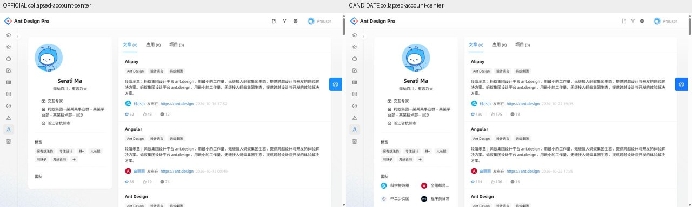


collapsed-account-settings
/account/settings · 1280×720 · matched_geometry · 原始几何通过
同视口、字体、滚动；关键锚点在2px内。截图已审阅，动态值/页脚/版本主色仍独立记录。

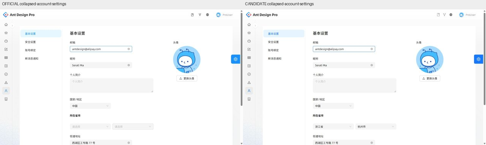


collapsed-admin
/admin/sub-page · 1280×720 · matched_geometry · 原始几何通过
同视口、字体、滚动；关键锚点在2px内。截图已审阅，动态值/页脚/版本主色仍独立记录。

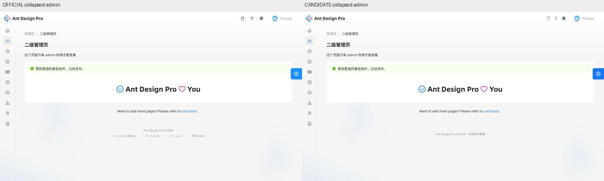


collapsed-chatbot
/chatbot · 1280×720 · matched_geometry · 原始几何通过
同视口、字体、滚动；关键锚点在2px内。截图已审阅，动态值/页脚/版本主色仍独立记录。

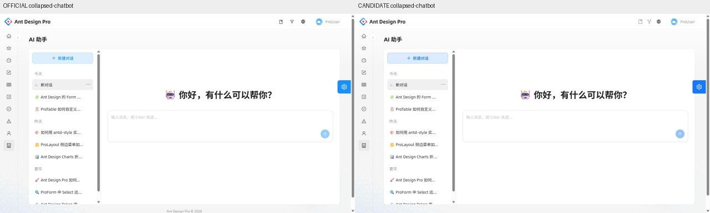


collapsed-dashboard-analysis
/dashboard/analysis · 1280×720 · matched_geometry · 原始几何通过
同视口、字体、滚动；关键锚点在2px内。截图已审阅，动态值/页脚/版本主色仍独立记录。

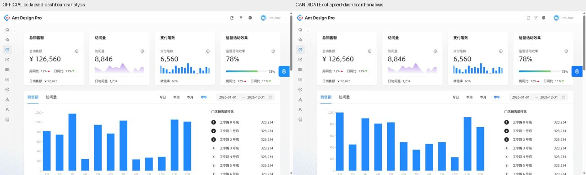


collapsed-dashboard-monitor
/dashboard/monitor · 1280×720 · matched_geometry · 原始几何通过
同视口、字体、滚动；关键锚点在2px内。截图已审阅，动态值/页脚/版本主色仍独立记录。

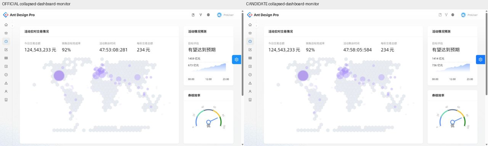


collapsed-dashboard-workplace
/dashboard/workplace · 1280×720 · matched_geometry · 原始几何通过
同视口、字体、滚动；关键锚点在2px内。截图已审阅，动态值/页脚/版本主色仍独立记录。

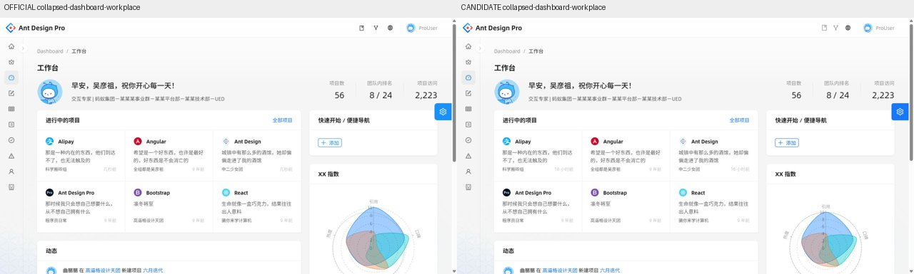


collapsed-exception-403
/exception/403 · 1280×720 · matched_geometry · 原始几何通过
同视口、字体、滚动；关键锚点在2px内。截图已审阅，动态值/页脚/版本主色仍独立记录。

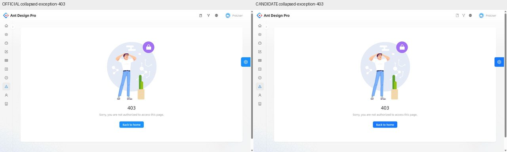


collapsed-exception-404
/exception/404 · 1280×720 · matched_geometry · 原始几何通过
同视口、字体、滚动；关键锚点在2px内。截图已审阅，动态值/页脚/版本主色仍独立记录。

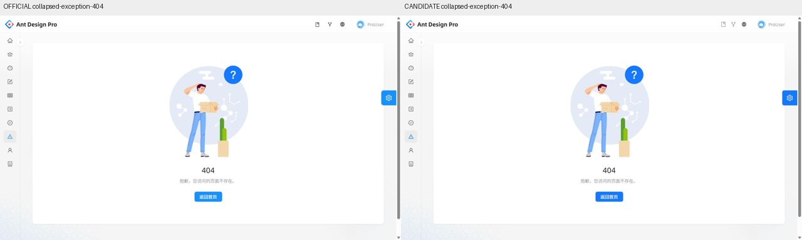


collapsed-exception-500
/exception/500 · 1280×720 · matched_geometry · 原始几何通过
同视口、字体、滚动；关键锚点在2px内。截图已审阅，动态值/页脚/版本主色仍独立记录。

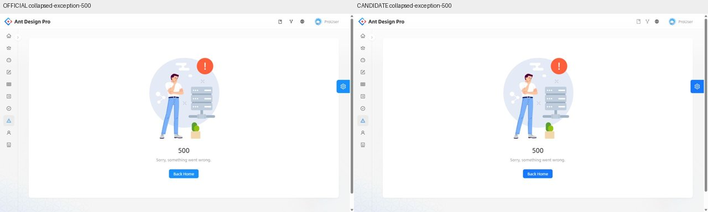


collapsed-form-advanced
/form/advanced-form · 1280×720 · matched_geometry · 原始几何通过
同视口、字体、滚动；关键锚点在2px内。截图已审阅，动态值/页脚/版本主色仍独立记录。

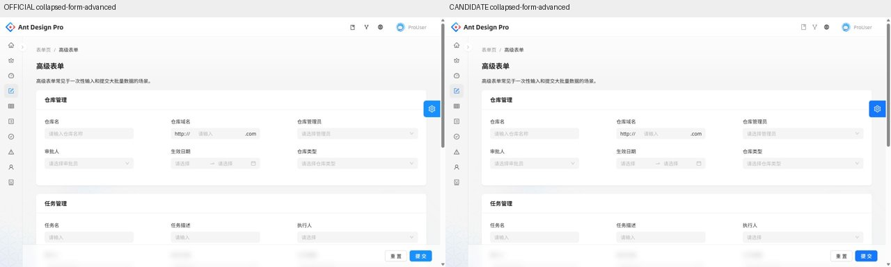


collapsed-form-basic
/form/basic-form · 1280×720 · matched_geometry · 原始几何通过
同视口、字体、滚动；关键锚点在2px内。截图已审阅，动态值/页脚/版本主色仍独立记录。

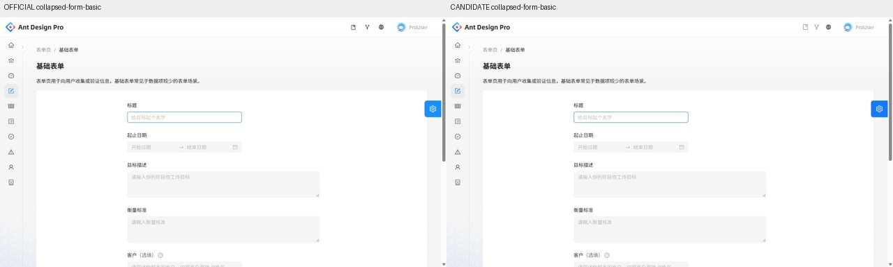


collapsed-form-step
/form/step-form · 1280×720 · matched_geometry · 原始几何通过
同视口、字体、滚动；关键锚点在2px内。截图已审阅，动态值/页脚/版本主色仍独立记录。

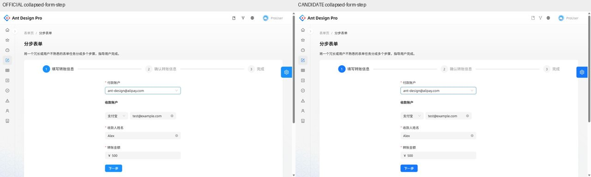


collapsed-list-basic
/list/basic-list · 1280×720 · matched_geometry · 原始几何通过
同视口、字体、滚动；关键锚点在2px内。截图已审阅，动态值/页脚/版本主色仍独立记录。

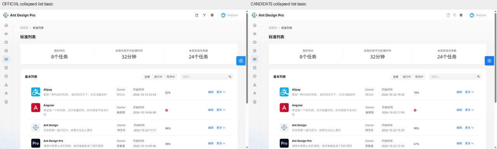


collapsed-list-card
/list/card-list · 1280×720 · matched_geometry · 原始几何通过
同视口、字体、滚动；关键锚点在2px内。截图已审阅，动态值/页脚/版本主色仍独立记录。

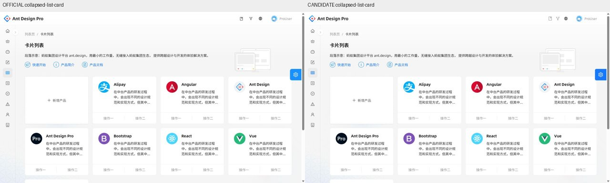


collapsed-list-table
/list/table-list · 1280×720 · matched_geometry · 原始几何通过
同视口、字体、滚动；关键锚点在2px内。截图已审阅，动态值/页脚/版本主色仍独立记录。

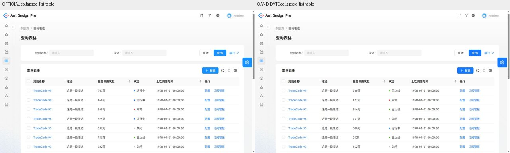


collapsed-profile-advanced
/profile/advanced · 1280×720 · matched_geometry · 原始几何通过
同视口、字体、滚动；关键锚点在2px内。截图已审阅，动态值/页脚/版本主色仍独立记录。

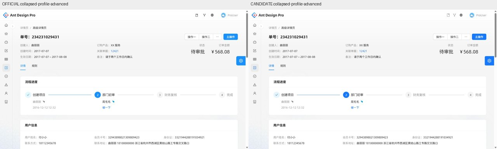


collapsed-profile-basic
/profile/basic · 1280×720 · matched_geometry · 原始几何通过
同视口、字体、滚动；关键锚点在2px内。截图已审阅，动态值/页脚/版本主色仍独立记录。

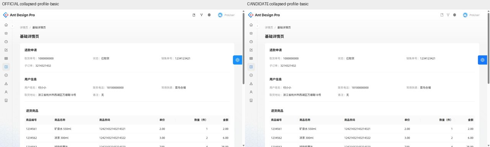


collapsed-result-fail
/result/fail · 1280×720 · matched_geometry · 原始几何通过
同视口、字体、滚动；关键锚点在2px内。截图已审阅，动态值/页脚/版本主色仍独立记录。

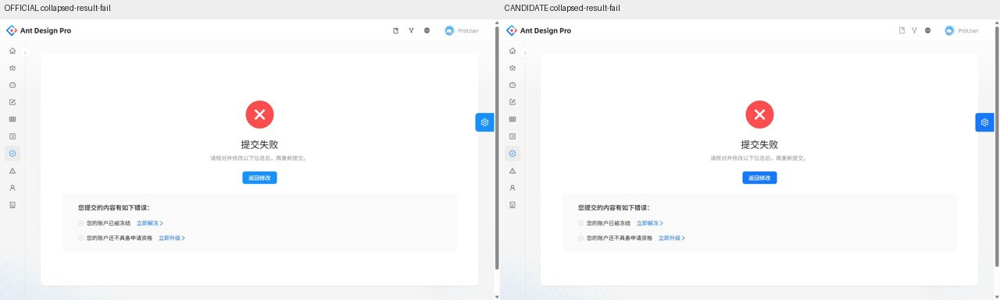


collapsed-result-success
/result/success · 1280×720 · matched_geometry · 原始几何通过
同视口、字体、滚动；关键锚点在2px内。截图已审阅，动态值/页脚/版本主色仍独立记录。

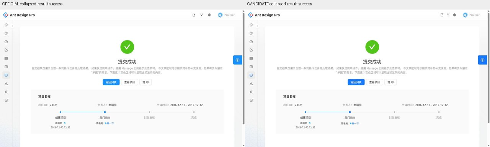


collapsed-search-applications
/list/search/applications · 1280×720 · controlled_official_renderer · 原始几何通过
同视口、字体、滚动；关键锚点在2px内。截图已审阅，动态值/页脚/版本主色仍独立记录。

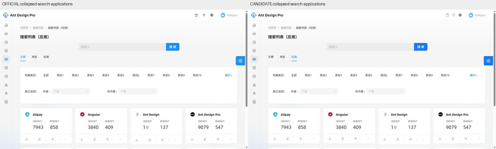


collapsed-search-articles
/list/search/articles · 1280×720 · matched_geometry · 原始几何通过
同视口、字体、滚动；关键锚点在2px内。截图已审阅，动态值/页脚/版本主色仍独立记录。

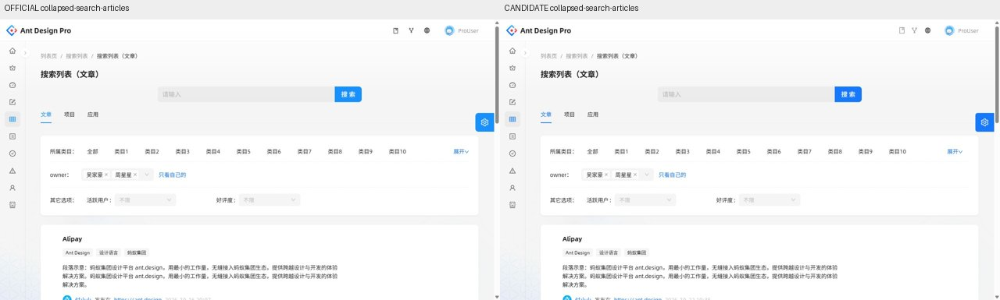


collapsed-search-projects
/list/search/projects · 1280×720 · matched_geometry · 原始几何通过
同视口、字体、滚动；关键锚点在2px内。截图已审阅，动态值/页脚/版本主色仍独立记录。

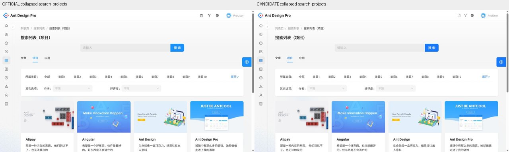


collapsed-welcome
/welcome · 1280×720 · documented_difference · 原始几何保留差异
代码6.0.3比线上6.0.1多AI Skills等文档；长文高度和目录锚点随内容变化，保留新版文档。

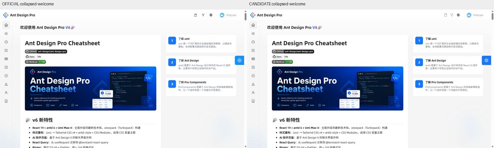


controlled-center-applications
/account/center · 1280×720 · controlled_official_renderer · 原始几何通过
同视口、字体、滚动；关键锚点在2px内。截图已审阅，动态值/页脚/版本主色仍独立记录。

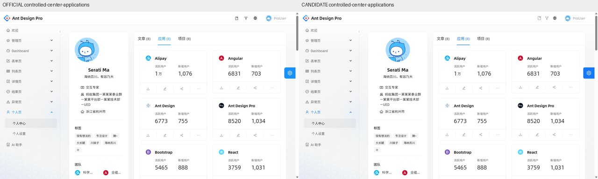


controlled-center-applications-s1200
/account/center · 1280×720 · controlled_official_renderer · 原始几何通过
同视口、字体、滚动；关键锚点在2px内。截图已审阅，动态值/页脚/版本主色仍独立记录。

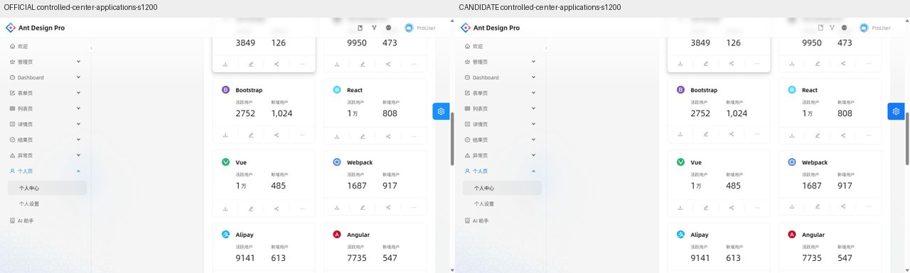


controlled-center-applications-s1800
/account/center · 1280×720 · controlled_official_renderer · 原始几何通过
同视口、字体、滚动；关键锚点在2px内。截图已审阅，动态值/页脚/版本主色仍独立记录。

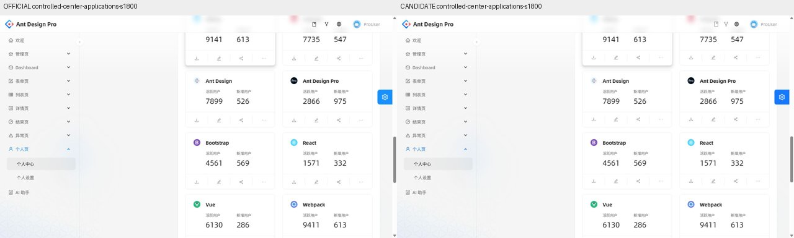


controlled-center-applications-s2400
/account/center · 1280×720 · controlled_official_renderer · 原始几何通过
同视口、字体、滚动；关键锚点在2px内。截图已审阅，动态值/页脚/版本主色仍独立记录。

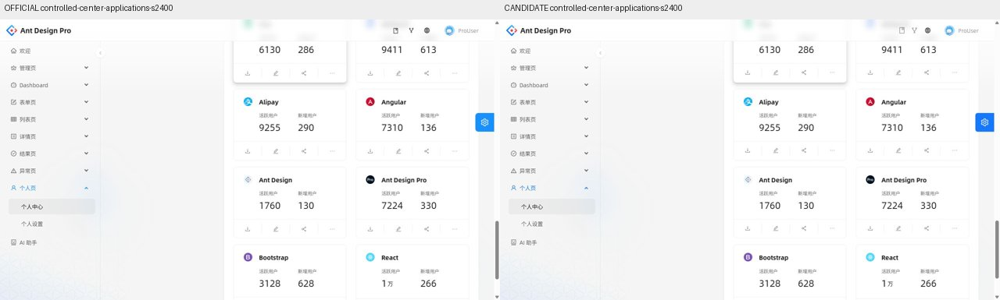


controlled-center-applications-s2567
/account/center · 1280×720 · controlled_official_renderer · 原始几何通过
同视口、字体、滚动；关键锚点在2px内。截图已审阅，动态值/页脚/版本主色仍独立记录。

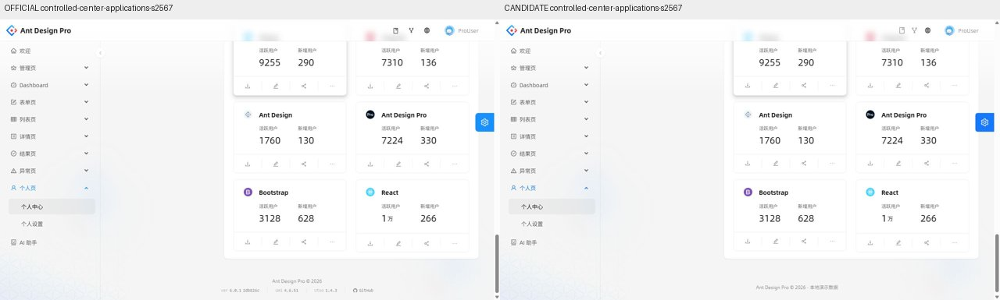


controlled-center-applications-s600
/account/center · 1280×720 · controlled_official_renderer · 原始几何通过
同视口、字体、滚动；关键锚点在2px内。截图已审阅，动态值/页脚/版本主色仍独立记录。

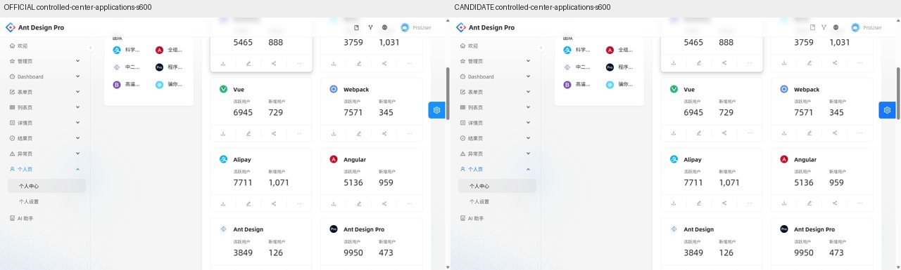


controlled-search-applications
/list/search/applications · 1280×720 · controlled_official_renderer · 原始几何通过
同视口、字体、滚动；关键锚点在2px内。截图已审阅，动态值/页脚/版本主色仍独立记录。

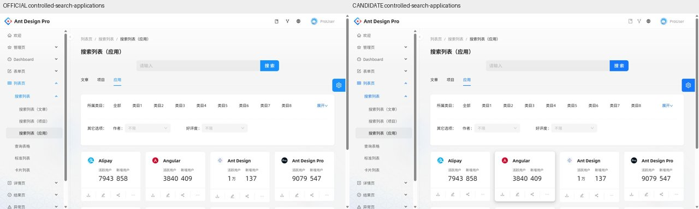


dark-account-center
/account/center · 1280×720 · documented_difference · 原始几何保留差异
线上团队为空，本地保留6个团队；窄屏两栏改为纵向后团队高度会影响后续位置。6.0.3头像居中，线上窄屏头像靠左。应用随机指标中“万”的自然行高也影响列表位置；controlled-center-applications及其5段同数据对照均为0偏移。

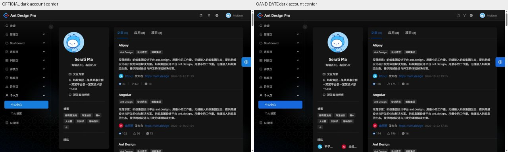


dark-account-settings
/account/settings · 1280×720 · matched_geometry · 原始几何通过
同视口、字体、滚动；关键锚点在2px内。截图已审阅，动态值/页脚/版本主色仍独立记录。

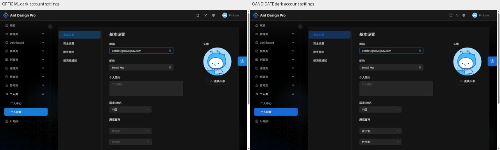


dark-admin
/admin/sub-page · 1280×720 · matched_geometry · 原始几何通过
同视口、字体、滚动；关键锚点在2px内。截图已审阅，动态值/页脚/版本主色仍独立记录。

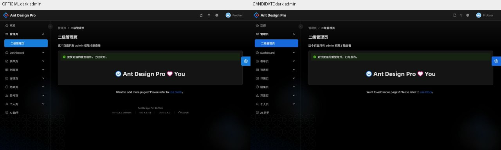


dark-chatbot
/chatbot · 1280×720 · matched_geometry · 原始几何通过
同视口、字体、滚动；关键锚点在2px内。截图已审阅，动态值/页脚/版本主色仍独立记录。

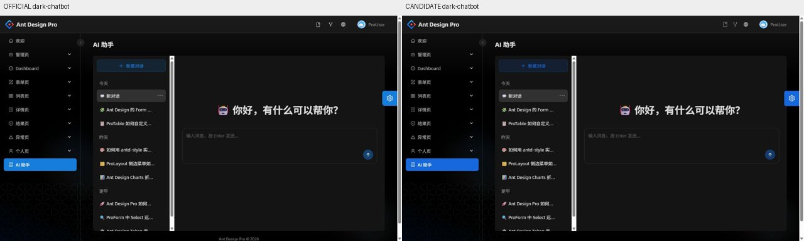


dark-dashboard-analysis
/dashboard/analysis · 1280×720 · matched_geometry · 原始几何通过
同视口、字体、滚动；关键锚点在2px内。截图已审阅，动态值/页脚/版本主色仍独立记录。

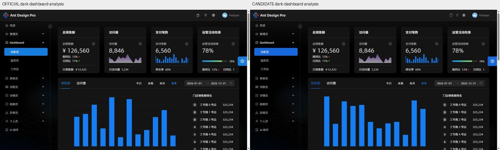


dark-dashboard-monitor
/dashboard/monitor · 1280×720 · matched_geometry · 原始几何通过
同视口、字体、滚动；关键锚点在2px内。截图已审阅，动态值/页脚/版本主色仍独立记录。

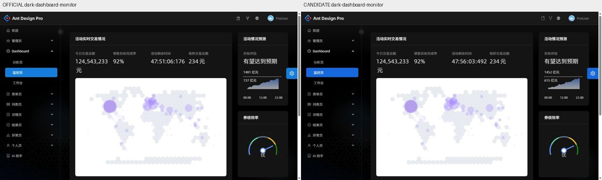


dark-dashboard-workplace
/dashboard/workplace · 1280×720 · matched_geometry · 原始几何通过
同视口、字体、滚动；关键锚点在2px内。截图已审阅，动态值/页脚/版本主色仍独立记录。

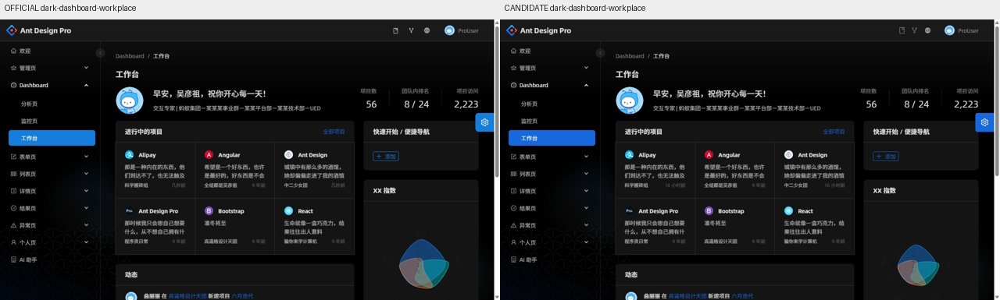


dark-exception-403
/exception/403 · 1280×720 · matched_geometry · 原始几何通过
同视口、字体、滚动；关键锚点在2px内。截图已审阅，动态值/页脚/版本主色仍独立记录。

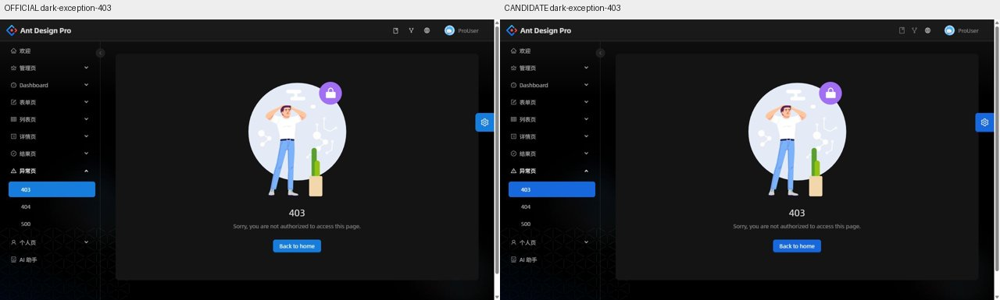


dark-exception-404
/exception/404 · 1280×720 · matched_geometry · 原始几何通过
同视口、字体、滚动；关键锚点在2px内。截图已审阅，动态值/页脚/版本主色仍独立记录。

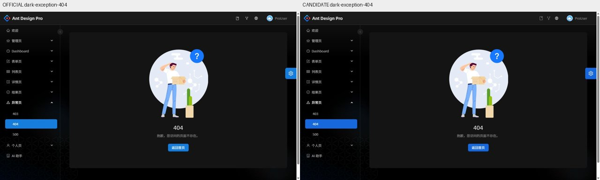


dark-exception-500
/exception/500 · 1280×720 · matched_geometry · 原始几何通过
同视口、字体、滚动；关键锚点在2px内。截图已审阅，动态值/页脚/版本主色仍独立记录。

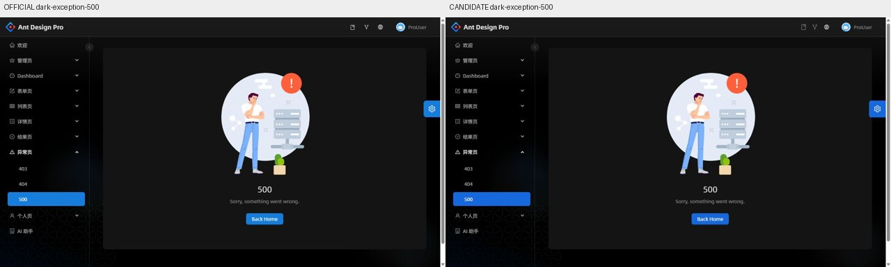


dark-form-advanced
/form/advanced-form · 1280×720 · matched_geometry · 原始几何通过
同视口、字体、滚动；关键锚点在2px内。截图已审阅，动态值/页脚/版本主色仍独立记录。

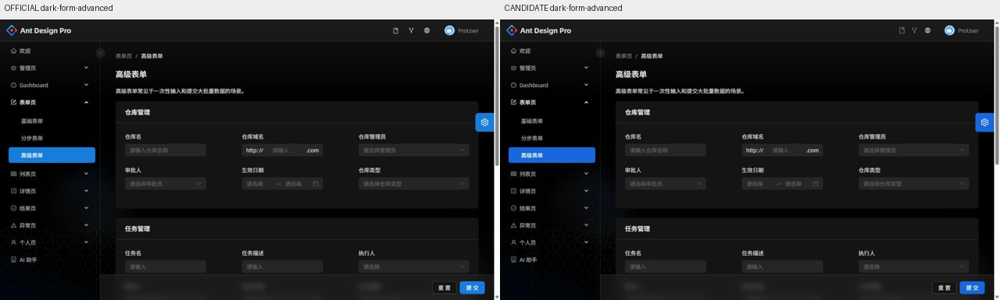


dark-form-basic
/form/basic-form · 1280×720 · matched_geometry · 原始几何通过
同视口、字体、滚动；关键锚点在2px内。截图已审阅，动态值/页脚/版本主色仍独立记录。

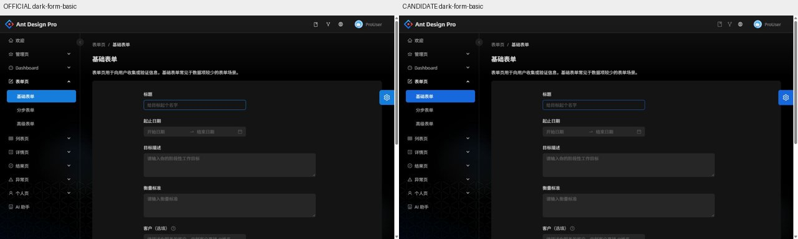


dark-form-step
/form/step-form · 1280×720 · matched_geometry · 原始几何通过
同视口、字体、滚动；关键锚点在2px内。截图已审阅，动态值/页脚/版本主色仍独立记录。

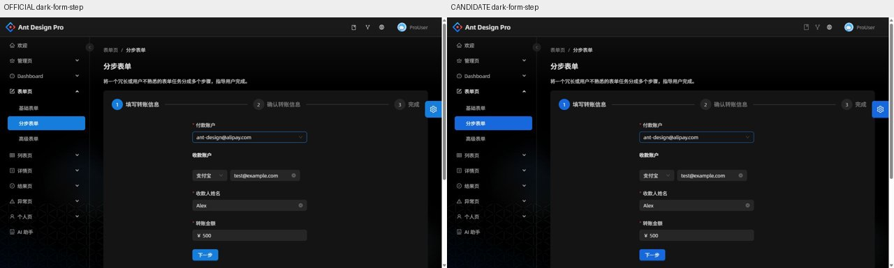


dark-list-basic
/list/basic-list · 1280×720 · matched_geometry · 原始几何通过
同视口、字体、滚动；关键锚点在2px内。截图已审阅，动态值/页脚/版本主色仍独立记录。

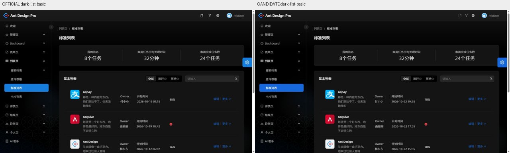


dark-list-card
/list/card-list · 1280×720 · matched_geometry · 原始几何通过
同视口、字体、滚动；关键锚点在2px内。截图已审阅，动态值/页脚/版本主色仍独立记录。

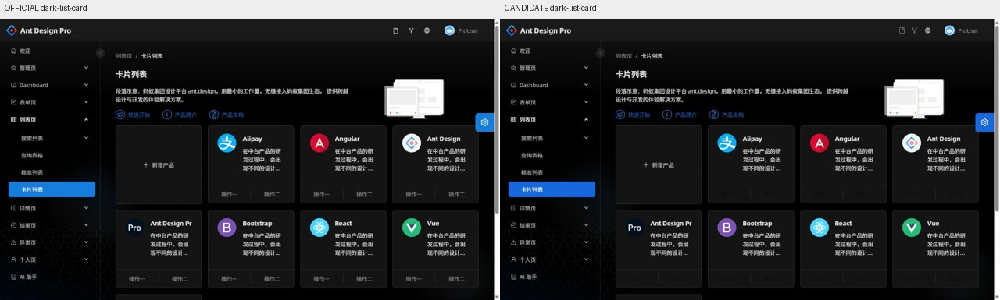


dark-list-table
/list/table-list · 1280×720 · matched_geometry · 原始几何通过
同视口、字体、滚动；关键锚点在2px内。截图已审阅，动态值/页脚/版本主色仍独立记录。

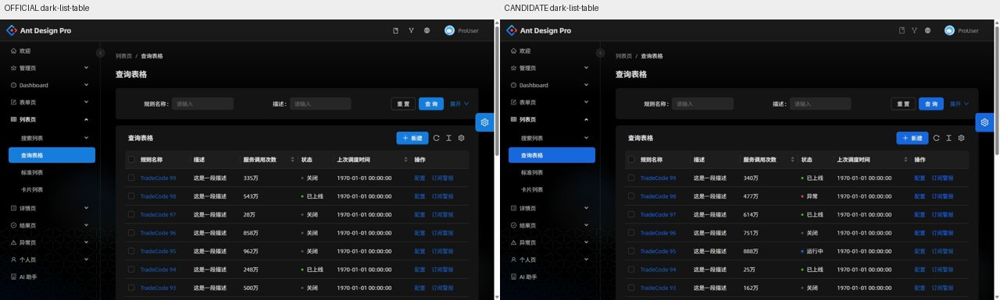


dark-profile-advanced
/profile/advanced · 1280×720 · matched_geometry · 原始几何通过
同视口、字体、滚动；关键锚点在2px内。截图已审阅，动态值/页脚/版本主色仍独立记录。

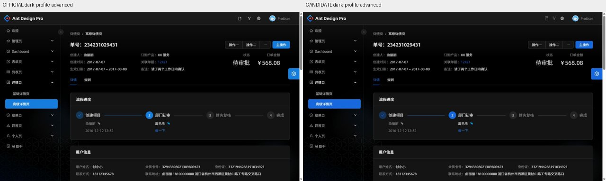


dark-profile-basic
/profile/basic · 1280×720 · matched_geometry · 原始几何通过
同视口、字体、滚动；关键锚点在2px内。截图已审阅，动态值/页脚/版本主色仍独立记录。

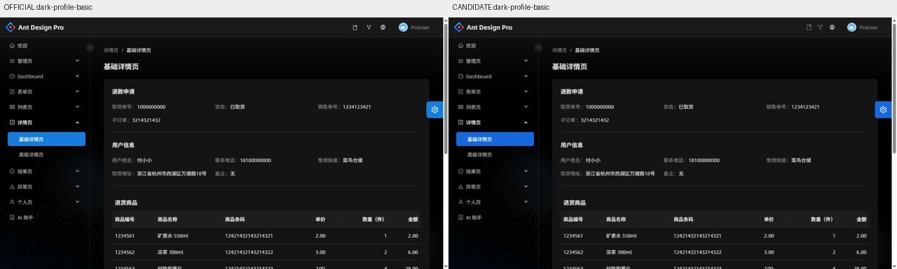


dark-result-fail
/result/fail · 1280×720 · matched_geometry · 原始几何通过
同视口、字体、滚动；关键锚点在2px内。截图已审阅，动态值/页脚/版本主色仍独立记录。

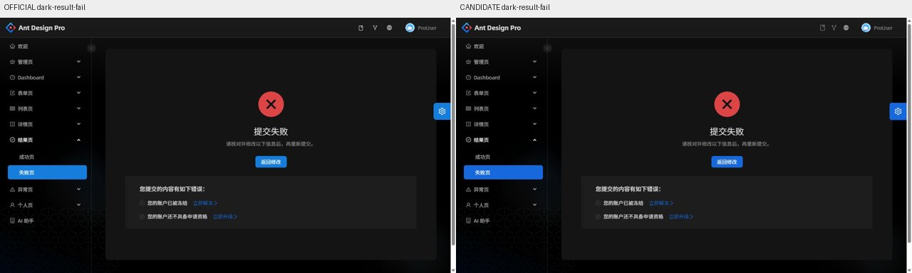


dark-result-success
/result/success · 1280×720 · matched_geometry · 原始几何通过
同视口、字体、滚动；关键锚点在2px内。截图已审阅，动态值/页脚/版本主色仍独立记录。


dark-search-applications
/list/search/applications · 1280×720 · controlled_official_renderer · 原始几何通过
同视口、字体、滚动；关键锚点在2px内。截图已审阅，动态值/页脚/版本主色仍独立记录。


dark-search-articles
/list/search/articles · 1280×720 · matched_geometry · 原始几何通过
同视口、字体、滚动；关键锚点在2px内。截图已审阅，动态值/页脚/版本主色仍独立记录。


dark-search-projects
/list/search/projects · 1280×720 · matched_geometry · 原始几何通过
同视口、字体、滚动；关键锚点在2px内。截图已审阅，动态值/页脚/版本主色仍独立记录。


dark-welcome
/welcome · 1280×720 · documented_difference · 原始几何保留差异
代码6.0.3比线上6.0.1多AI Skills等文档；长文高度和目录锚点随内容变化，保留新版文档。


desktop-account-center
/account/center · 1280×720 · documented_difference · 原始几何保留差异
线上团队为空，本地保留6个团队；窄屏两栏改为纵向后团队高度会影响后续位置。6.0.3头像居中，线上窄屏头像靠左。应用随机指标中“万”的自然行高也影响列表位置；controlled-center-applications及其5段同数据对照均为0偏移。


desktop-account-settings
/account/settings · 1280×720 · matched_geometry · 原始几何通过
同视口、字体、滚动；关键锚点在2px内。截图已审阅，动态值/页脚/版本主色仍独立记录。


desktop-admin
/admin/sub-page · 1280×720 · matched_geometry · 原始几何通过
同视口、字体、滚动；关键锚点在2px内。截图已审阅，动态值/页脚/版本主色仍独立记录。


desktop-chatbot
/chatbot · 1280×720 · matched_geometry · 原始几何通过
同视口、字体、滚动；关键锚点在2px内。截图已审阅，动态值/页脚/版本主色仍独立记录。


desktop-dashboard-analysis
/dashboard/analysis · 1280×720 · matched_geometry · 原始几何通过
同视口、字体、滚动；关键锚点在2px内。截图已审阅，动态值/页脚/版本主色仍独立记录。


desktop-dashboard-monitor
/dashboard/monitor · 1280×720 · matched_geometry · 原始几何通过
同视口、字体、滚动；关键锚点在2px内。截图已审阅，动态值/页脚/版本主色仍独立记录。


desktop-dashboard-workplace
/dashboard/workplace · 1280×720 · matched_geometry · 原始几何通过
同视口、字体、滚动；关键锚点在2px内。截图已审阅，动态值/页脚/版本主色仍独立记录。


desktop-exception-403
/exception/403 · 1280×720 · matched_geometry · 原始几何通过
同视口、字体、滚动；关键锚点在2px内。截图已审阅，动态值/页脚/版本主色仍独立记录。


desktop-exception-404
/exception/404 · 1280×720 · matched_geometry · 原始几何通过
同视口、字体、滚动；关键锚点在2px内。截图已审阅，动态值/页脚/版本主色仍独立记录。


desktop-exception-500
/exception/500 · 1280×720 · matched_geometry · 原始几何通过
同视口、字体、滚动；关键锚点在2px内。截图已审阅，动态值/页脚/版本主色仍独立记录。


desktop-form-advanced
/form/advanced-form · 1280×720 · matched_geometry · 原始几何通过
同视口、字体、滚动；关键锚点在2px内。截图已审阅，动态值/页脚/版本主色仍独立记录。


desktop-form-basic
/form/basic-form · 1280×720 · matched_geometry · 原始几何通过
同视口、字体、滚动；关键锚点在2px内。截图已审阅，动态值/页脚/版本主色仍独立记录。


desktop-form-step
/form/step-form · 1280×720 · matched_geometry · 原始几何通过
同视口、字体、滚动；关键锚点在2px内。截图已审阅，动态值/页脚/版本主色仍独立记录。


desktop-list-basic
/list/basic-list · 1280×720 · matched_geometry · 原始几何通过
同视口、字体、滚动；关键锚点在2px内。截图已审阅，动态值/页脚/版本主色仍独立记录。


desktop-list-card
/list/card-list · 1280×720 · matched_geometry · 原始几何通过
同视口、字体、滚动；关键锚点在2px内。截图已审阅，动态值/页脚/版本主色仍独立记录。


desktop-list-table
/list/table-list · 1280×720 · matched_geometry · 原始几何通过
同视口、字体、滚动；关键锚点在2px内。截图已审阅，动态值/页脚/版本主色仍独立记录。


desktop-profile-advanced
/profile/advanced · 1280×720 · matched_geometry · 原始几何通过
同视口、字体、滚动；关键锚点在2px内。截图已审阅，动态值/页脚/版本主色仍独立记录。


desktop-profile-basic
/profile/basic · 1280×720 · matched_geometry · 原始几何通过
同视口、字体、滚动；关键锚点在2px内。截图已审阅，动态值/页脚/版本主色仍独立记录。


desktop-result-fail
/result/fail · 1280×720 · matched_geometry · 原始几何通过
同视口、字体、滚动；关键锚点在2px内。截图已审阅，动态值/页脚/版本主色仍独立记录。


desktop-result-success
/result/success · 1280×720 · matched_geometry · 原始几何通过
同视口、字体、滚动；关键锚点在2px内。截图已审阅，动态值/页脚/版本主色仍独立记录。


desktop-search-applications
/list/search/applications · 1280×720 · controlled_official_renderer · 原始几何通过
同视口、字体、滚动；关键锚点在2px内。截图已审阅，动态值/页脚/版本主色仍独立记录。


desktop-search-articles
/list/search/articles · 1280×720 · matched_geometry · 原始几何通过
同视口、字体、滚动；关键锚点在2px内。截图已审阅，动态值/页脚/版本主色仍独立记录。


desktop-search-projects
/list/search/projects · 1280×720 · matched_geometry · 原始几何通过
同视口、字体、滚动；关键锚点在2px内。截图已审阅，动态值/页脚/版本主色仍独立记录。


desktop-user-login
/user/login · 1280×720 · matched_geometry · 原始几何通过
同视口、字体、滚动；关键锚点在2px内。截图已审阅，动态值/页脚/版本主色仍独立记录。


desktop-user-register
/user/register · 1280×720 · matched_geometry · 原始几何通过
同视口、字体、滚动；关键锚点在2px内。截图已审阅，动态值/页脚/版本主色仍独立记录。


desktop-user-register-result
/user/register-result · 1280×720 · matched_geometry · 原始几何通过
同视口、字体、滚动；关键锚点在2px内。截图已审阅，动态值/页脚/版本主色仍独立记录。


desktop-welcome
/welcome · 1280×720 · documented_difference · 原始几何保留差异
代码6.0.3比线上6.0.1多AI Skills等文档；长文高度和目录锚点随内容变化，保留新版文档。


lower-center-applications-s1200
/account/center · 1280×720 · documented_difference · 原始几何保留差异
线上团队为空，本地保留6个团队；窄屏两栏改为纵向后团队高度会影响后续位置。6.0.3头像居中，线上窄屏头像靠左。应用随机指标中“万”的自然行高也影响列表位置；controlled-center-applications及其5段同数据对照均为0偏移。


lower-center-applications-s1800
/account/center · 1280×720 · documented_difference · 原始几何保留差异
线上团队为空，本地保留6个团队；窄屏两栏改为纵向后团队高度会影响后续位置。6.0.3头像居中，线上窄屏头像靠左。应用随机指标中“万”的自然行高也影响列表位置；controlled-center-applications及其5段同数据对照均为0偏移。


lower-center-applications-s2400
/account/center · 1280×720 · documented_difference · 原始几何保留差异
线上团队为空，本地保留6个团队；窄屏两栏改为纵向后团队高度会影响后续位置。6.0.3头像居中，线上窄屏头像靠左。应用随机指标中“万”的自然行高也影响列表位置；controlled-center-applications及其5段同数据对照均为0偏移。


lower-center-applications-s2555
/account/center · 1280×720 · documented_difference · 原始几何保留差异
线上团队为空，本地保留6个团队；窄屏两栏改为纵向后团队高度会影响后续位置。6.0.3头像居中，线上窄屏头像靠左。应用随机指标中“万”的自然行高也影响列表位置；controlled-center-applications及其5段同数据对照均为0偏移。


lower-center-applications-s600
/account/center · 1280×720 · documented_difference · 原始几何保留差异
线上团队为空，本地保留6个团队；窄屏两栏改为纵向后团队高度会影响后续位置。6.0.3头像居中，线上窄屏头像靠左。应用随机指标中“万”的自然行高也影响列表位置；controlled-center-applications及其5段同数据对照均为0偏移。


lower-center-articles-s1200
/account/center · 1280×720 · documented_difference · 原始几何保留差异
线上团队为空，本地保留6个团队；窄屏两栏改为纵向后团队高度会影响后续位置。6.0.3头像居中，线上窄屏头像靠左。应用随机指标中“万”的自然行高也影响列表位置；controlled-center-applications及其5段同数据对照均为0偏移。


lower-center-articles-s1800
/account/center · 1280×720 · documented_difference · 原始几何保留差异
线上团队为空，本地保留6个团队；窄屏两栏改为纵向后团队高度会影响后续位置。6.0.3头像居中，线上窄屏头像靠左。应用随机指标中“万”的自然行高也影响列表位置；controlled-center-applications及其5段同数据对照均为0偏移。


lower-center-articles-s2400
/account/center · 1280×720 · documented_difference · 原始几何保留差异
线上团队为空，本地保留6个团队；窄屏两栏改为纵向后团队高度会影响后续位置。6.0.3头像居中，线上窄屏头像靠左。应用随机指标中“万”的自然行高也影响列表位置；controlled-center-applications及其5段同数据对照均为0偏移。


lower-center-articles-s3000
/account/center · 1280×720 · documented_difference · 原始几何保留差异
线上团队为空，本地保留6个团队；窄屏两栏改为纵向后团队高度会影响后续位置。6.0.3头像居中，线上窄屏头像靠左。应用随机指标中“万”的自然行高也影响列表位置；controlled-center-applications及其5段同数据对照均为0偏移。


lower-center-articles-s3600
/account/center · 1280×720 · documented_difference · 原始几何保留差异
线上团队为空，本地保留6个团队；窄屏两栏改为纵向后团队高度会影响后续位置。6.0.3头像居中，线上窄屏头像靠左。应用随机指标中“万”的自然行高也影响列表位置；controlled-center-applications及其5段同数据对照均为0偏移。


lower-center-articles-s4200
/account/center · 1280×720 · documented_difference · 原始几何保留差异
线上团队为空，本地保留6个团队；窄屏两栏改为纵向后团队高度会影响后续位置。6.0.3头像居中，线上窄屏头像靠左。应用随机指标中“万”的自然行高也影响列表位置；controlled-center-applications及其5段同数据对照均为0偏移。


lower-center-articles-s4800
/account/center · 1280×720 · documented_difference · 原始几何保留差异
线上团队为空，本地保留6个团队；窄屏两栏改为纵向后团队高度会影响后续位置。6.0.3头像居中，线上窄屏头像靠左。应用随机指标中“万”的自然行高也影响列表位置；controlled-center-applications及其5段同数据对照均为0偏移。


lower-center-articles-s5400
/account/center · 1280×720 · documented_difference · 原始几何保留差异
线上团队为空，本地保留6个团队；窄屏两栏改为纵向后团队高度会影响后续位置。6.0.3头像居中，线上窄屏头像靠左。应用随机指标中“万”的自然行高也影响列表位置；controlled-center-applications及其5段同数据对照均为0偏移。


lower-center-articles-s600
/account/center · 1280×720 · documented_difference · 原始几何保留差异
线上团队为空，本地保留6个团队；窄屏两栏改为纵向后团队高度会影响后续位置。6.0.3头像居中，线上窄屏头像靠左。应用随机指标中“万”的自然行高也影响列表位置；controlled-center-applications及其5段同数据对照均为0偏移。


lower-center-articles-s6000
/account/center · 1280×720 · documented_difference · 原始几何保留差异
线上团队为空，本地保留6个团队；窄屏两栏改为纵向后团队高度会影响后续位置。6.0.3头像居中，线上窄屏头像靠左。应用随机指标中“万”的自然行高也影响列表位置；controlled-center-applications及其5段同数据对照均为0偏移。


lower-center-articles-s6600
/account/center · 1280×720 · documented_difference · 原始几何保留差异
线上团队为空，本地保留6个团队；窄屏两栏改为纵向后团队高度会影响后续位置。6.0.3头像居中，线上窄屏头像靠左。应用随机指标中“万”的自然行高也影响列表位置；controlled-center-applications及其5段同数据对照均为0偏移。


lower-center-articles-s7090
/account/center · 1280×720 · documented_difference · 原始几何保留差异
线上团队为空，本地保留6个团队；窄屏两栏改为纵向后团队高度会影响后续位置。6.0.3头像居中，线上窄屏头像靠左。应用随机指标中“万”的自然行高也影响列表位置；controlled-center-applications及其5段同数据对照均为0偏移。


lower-center-projects-s1200
/account/center · 1280×720 · documented_difference · 原始几何保留差异
线上团队为空，本地保留6个团队；窄屏两栏改为纵向后团队高度会影响后续位置。6.0.3头像居中，线上窄屏头像靠左。应用随机指标中“万”的自然行高也影响列表位置；controlled-center-applications及其5段同数据对照均为0偏移。


lower-center-projects-s1800
/account/center · 1280×720 · documented_difference · 原始几何保留差异
线上团队为空，本地保留6个团队；窄屏两栏改为纵向后团队高度会影响后续位置。6.0.3头像居中，线上窄屏头像靠左。应用随机指标中“万”的自然行高也影响列表位置；controlled-center-applications及其5段同数据对照均为0偏移。


lower-center-projects-s2400
/account/center · 1280×720 · documented_difference · 原始几何保留差异
线上团队为空，本地保留6个团队；窄屏两栏改为纵向后团队高度会影响后续位置。6.0.3头像居中，线上窄屏头像靠左。应用随机指标中“万”的自然行高也影响列表位置；controlled-center-applications及其5段同数据对照均为0偏移。


lower-center-projects-s3000
/account/center · 1280×720 · documented_difference · 原始几何保留差异
线上团队为空，本地保留6个团队；窄屏两栏改为纵向后团队高度会影响后续位置。6.0.3头像居中，线上窄屏头像靠左。应用随机指标中“万”的自然行高也影响列表位置；controlled-center-applications及其5段同数据对照均为0偏移。


lower-center-projects-s3600
/account/center · 1280×720 · documented_difference · 原始几何保留差异
线上团队为空，本地保留6个团队；窄屏两栏改为纵向后团队高度会影响后续位置。6.0.3头像居中，线上窄屏头像靠左。应用随机指标中“万”的自然行高也影响列表位置；controlled-center-applications及其5段同数据对照均为0偏移。


lower-center-projects-s4200
/account/center · 1280×720 · documented_difference · 原始几何保留差异
线上团队为空，本地保留6个团队；窄屏两栏改为纵向后团队高度会影响后续位置。6.0.3头像居中，线上窄屏头像靠左。应用随机指标中“万”的自然行高也影响列表位置；controlled-center-applications及其5段同数据对照均为0偏移。


lower-center-projects-s4681
/account/center · 1280×720 · documented_difference · 原始几何保留差异
线上团队为空，本地保留6个团队；窄屏两栏改为纵向后团队高度会影响后续位置。6.0.3头像居中，线上窄屏头像靠左。应用随机指标中“万”的自然行高也影响列表位置；controlled-center-applications及其5段同数据对照均为0偏移。


lower-center-projects-s600
/account/center · 1280×720 · documented_difference · 原始几何保留差异
线上团队为空，本地保留6个团队；窄屏两栏改为纵向后团队高度会影响后续位置。6.0.3头像居中，线上窄屏头像靠左。应用随机指标中“万”的自然行高也影响列表位置；controlled-center-applications及其5段同数据对照均为0偏移。


lower-list-basic
/list/basic-list · 1280×720 · matched_geometry · 原始几何通过
同视口、字体、滚动；关键锚点在2px内。截图已审阅，动态值/页脚/版本主色仍独立记录。


lower-list-basic-s510
/list/basic-list · 1280×720 · matched_geometry · 原始几何通过
同视口、字体、滚动；关键锚点在2px内。截图已审阅，动态值/页脚/版本主色仍独立记录。


lower-list-card
/list/card-list · 1280×720 · matched_geometry · 原始几何通过
同视口、字体、滚动；关键锚点在2px内。截图已审阅，动态值/页脚/版本主色仍独立记录。


lower-list-card-s307
/list/card-list · 1280×720 · matched_geometry · 原始几何通过
同视口、字体、滚动；关键锚点在2px内。截图已审阅，动态值/页脚/版本主色仍独立记录。


lower-search-applications
/list/search/applications · 1280×720 · documented_difference · 原始几何保留差异
手机作者/好评度筛选占满可用宽度；官方控件过窄。相同指标下筛选区相差80px，后续卡片随之平移。其余7种环境已同指标比较通过。


lower-search-applications-s298
/list/search/applications · 1280×720 · documented_difference · 原始几何保留差异
手机作者/好评度筛选占满可用宽度；官方控件过窄。相同指标下筛选区相差80px，后续卡片随之平移。其余7种环境已同指标比较通过。


lower-search-articles
/list/search/articles · 1280×720 · matched_geometry · 原始几何通过
同视口、字体、滚动；关键锚点在2px内。截图已审阅，动态值/页脚/版本主色仍独立记录。


lower-search-articles-s1200
/list/search/articles · 1280×720 · matched_geometry · 原始几何通过
同视口、字体、滚动；关键锚点在2px内。截图已审阅，动态值/页脚/版本主色仍独立记录。


lower-search-articles-s1256
/list/search/articles · 1280×720 · matched_geometry · 原始几何通过
同视口、字体、滚动；关键锚点在2px内。截图已审阅，动态值/页脚/版本主色仍独立记录。


lower-search-articles-s600
/list/search/articles · 1280×720 · matched_geometry · 原始几何通过
同视口、字体、滚动；关键锚点在2px内。截图已审阅，动态值/页脚/版本主色仍独立记录。


lower-search-projects
/list/search/projects · 1280×720 · matched_geometry · 原始几何通过
同视口、字体、滚动；关键锚点在2px内。截图已审阅，动态值/页脚/版本主色仍独立记录。


lower-search-projects-s445
/list/search/projects · 1280×720 · matched_geometry · 原始几何通过
同视口、字体、滚动；关键锚点在2px内。截图已审阅，动态值/页脚/版本主色仍独立记录。


mobile-account-center
/account/center · 390×844 · documented_difference · 原始几何保留差异
线上团队为空，本地保留6个团队；窄屏两栏改为纵向后团队高度会影响后续位置。6.0.3头像居中，线上窄屏头像靠左。应用随机指标中“万”的自然行高也影响列表位置；controlled-center-applications及其5段同数据对照均为0偏移。


mobile-account-settings
/account/settings · 390×844 · documented_difference · 原始几何保留差异
手机使用四项可见的横向导航、受控宽度字段；官方纵向导航和固定宽表单挤压内容。默认省市数据不同；同为空的4项必填校验已配对通过。


mobile-admin
/admin/sub-page · 390×844 · matched_geometry · 原始几何通过
同视口、字体、滚动；关键锚点在2px内。截图已审阅，动态值/页脚/版本主色仍独立记录。


mobile-analysis-search-lower
/dashboard/analysis · 390×844 · matched_geometry · 原始几何通过
同视口、字体、滚动；关键锚点在2px内。截图已审阅，动态值/页脚/版本主色仍独立记录。


mobile-chatbot
/chatbot · 390×844 · documented_difference · 原始几何保留差异
手机会话列表位于消息区上方；官方固定侧栏挤压消息和发送器。流式回复采用披露的本地SSE数据，异步采样字数可能略有不同。


mobile-dashboard-analysis
/dashboard/analysis · 390×844 · matched_geometry · 原始几何通过
同视口、字体、滚动；关键锚点在2px内。截图已审阅，动态值/页脚/版本主色仍独立记录。


mobile-dashboard-monitor
/dashboard/monitor · 390×844 · documented_difference · 原始几何保留差异
手机分类进度竖排，避免三项挤在同一行；实时数值、倒计时和图表采样不同。


mobile-dashboard-workplace
/dashboard/workplace · 390×844 · documented_difference · 原始几何保留差异
手机项目Card.Grid改单列，保留可读的标题/描述；官方仍显示三列窄卡。


mobile-exception-403
/exception/403 · 390×844 · matched_geometry · 原始几何通过
同视口、字体、滚动；关键锚点在2px内。截图已审阅，动态值/页脚/版本主色仍独立记录。


mobile-exception-404
/exception/404 · 390×844 · matched_geometry · 原始几何通过
同视口、字体、滚动；关键锚点在2px内。截图已审阅，动态值/页脚/版本主色仍独立记录。


mobile-exception-500
/exception/500 · 390×844 · matched_geometry · 原始几何通过
同视口、字体、滚动；关键锚点在2px内。截图已审阅，动态值/页脚/版本主色仍独立记录。


mobile-form-advanced
/form/advanced-form · 390×844 · documented_difference · 原始几何保留差异
窄屏成员表在自身容器滚动，保留字段可读性；部分平板表宽差15px为组件滚动条保留宽度差。


mobile-form-basic
/form/basic-form · 390×844 · matched_geometry · 原始几何通过
同视口、字体、滚动；关键锚点在2px内。截图已审阅，动态值/页脚/版本主色仍独立记录。


mobile-form-step
/form/step-form · 390×844 · documented_difference · 原始几何保留差异
手机收款方式与账号按可用宽度堆叠，固定宽字段收进卡片；官方并列字段超出内容宽度。


mobile-list-basic
/list/basic-list · 390×844 · matched_geometry · 原始几何通过
同视口、字体、滚动；关键锚点在2px内。截图已审阅，动态值/页脚/版本主色仍独立记录。


mobile-list-card
/list/card-list · 390×844 · documented_difference · 原始几何保留差异
手机文档链接取消官方1000px绝对定位，改为容器内可换行链接；页头比参考短4px，后续卡片同偏移，未作零差异声明。


mobile-list-table
/list/table-list · 390×844 · matched_geometry · 原始几何通过
同视口、字体、滚动；关键锚点在2px内。截图已审阅，动态值/页脚/版本主色仍独立记录。


mobile-profile-advanced
/profile/advanced · 390×844 · documented_difference · 原始几何保留差异
窄屏日志宽表使用表内滚动，保留字段和操作，官方以换行缩窄；部分平板表宽差15px为组件滚动条保留宽度差。


mobile-profile-basic
/profile/basic · 390×844 · documented_difference · 原始几何保留差异
商品与进度表保留列宽并在容器内滚动；官方在平板/窄屏强制压缩换行，因此表宽、行高不同。


mobile-result-fail
/result/fail · 390×844 · matched_geometry · 原始几何通过
同视口、字体、滚动；关键锚点在2px内。截图已审阅，动态值/页脚/版本主色仍独立记录。


mobile-result-success
/result/success · 390×844 · matched_geometry · 原始几何通过
同视口、字体、滚动；关键锚点在2px内。截图已审阅，动态值/页脚/版本主色仍独立记录。


mobile-search-applications
/list/search/applications · 390×844 · documented_difference · 原始几何保留差异
手机作者/好评度筛选占满可用宽度；官方控件过窄。相同指标下筛选区相差80px，后续卡片随之平移。其余7种环境已同指标比较通过。


mobile-search-articles
/list/search/articles · 390×844 · documented_difference · 原始几何保留差异
手机筛选控件按可用宽度堆叠；官方固定宽控件拥挤。筛选区相差16px，后续列表随之平移。


mobile-search-projects
/list/search/projects · 390×844 · documented_difference · 原始几何保留差异
手机作者/好评度筛选占满可用宽度；官方较窄。筛选区相差16px，后续卡片随之平移。


mobile-user-login
/user/login · 390×844 · matched_geometry · 原始几何通过
同视口、字体、滚动；关键锚点在2px内。截图已审阅，动态值/页脚/版本主色仍独立记录。 认证页无后台侧栏/内容主题，dark与collapsed记不适用。


mobile-user-register
/user/register · 390×844 · matched_geometry · 原始几何通过
同视口、字体、滚动；关键锚点在2px内。截图已审阅，动态值/页脚/版本主色仍独立记录。 认证页无后台侧栏/内容主题，dark与collapsed记不适用。


mobile-user-register-result
/user/register-result · 390×844 · documented_difference · 原始几何保留差异
本地结果宽度随视口收缩；官方固定800px在窄屏溢出。本地明确没有创建真实账号或发邮件，查看账户弹窗替代官方查看邮箱。 认证页无后台侧栏/内容主题，dark与collapsed记不适用。


mobile-welcome
/welcome · 390×844 · documented_difference · 原始几何保留差异
代码6.0.3比线上6.0.1多AI Skills等文档；长文高度和目录锚点随内容变化，保留新版文档。


state-advanced-filled
/form/advanced-form · 1280×720 · controlled_official_renderer · 原始几何通过
同视口、字体、滚动；关键锚点在2px内。截图已审阅，动态值/页脚/版本主色仍独立记录。


state-advanced-member-add
/form/advanced-form · 1280×720 · matched_geometry · 原始几何通过
同视口、字体、滚动；关键锚点在2px内。截图已审阅，动态值/页脚/版本主色仍独立记录。


state-advanced-member-edit
/form/advanced-form · 1280×720 · matched_geometry · 原始几何通过
同视口、字体、滚动；关键锚点在2px内。截图已审阅，动态值/页脚/版本主色仍独立记录。


state-advanced-required
/form/advanced-form · 1280×720 · matched_geometry · 原始几何通过
同视口、字体、滚动；关键锚点在2px内。截图已审阅，动态值/页脚/版本主色仍独立记录。


state-advanced-submit
/form/advanced-form · 1280×720 · controlled_official_renderer · 原始几何通过
同视口、字体、滚动；关键锚点在2px内。截图已审阅，动态值/页脚/版本主色仍独立记录。


state-applications-filter
/list/search/applications · 1280×720 · matched_geometry · 原始几何通过
同视口、字体、滚动；关键锚点在2px内。截图已审阅，动态值/页脚/版本主色仍独立记录。


state-articles-empty
/list/search/articles · 1280×720 · controlled_official_renderer · 原始几何通过
同视口、字体、滚动；关键锚点在2px内。截图已审阅，动态值/页脚/版本主色仍独立记录。


state-articles-more
/list/search/articles · 1280×720 · local_extension · 原始几何保留差异
官方源码固定pageSize=5，加载更多仅refetch并仍显示5条；本地5→10条，列表高度不同。


state-articles-own
/list/search/articles · 1280×720 · matched_geometry · 原始几何通过
同视口、字体、滚动；关键锚点在2px内。截图已审阅，动态值/页脚/版本主色仍独立记录。


state-basic-create
/list/basic-list · 1280×720 · matched_geometry · 原始几何通过
同视口、字体、滚动；关键锚点在2px内。截图已审阅，动态值/页脚/版本主色仍独立记录。


state-basic-create-errors
/list/basic-list · 1280×720 · matched_geometry · 原始几何通过
同视口、字体、滚动；关键锚点在2px内。截图已审阅，动态值/页脚/版本主色仍独立记录。


state-basic-delete
/list/basic-list · 1280×720 · matched_geometry · 原始几何通过
同视口、字体、滚动；关键锚点在2px内。截图已审阅，动态值/页脚/版本主色仍独立记录。


state-basic-edit
/list/basic-list · 1280×720 · matched_geometry · 原始几何通过
同视口、字体、滚动；关键锚点在2px内。截图已审阅，动态值/页脚/版本主色仍独立记录。


state-basic-page2
/list/basic-list · 1280×720 · matched_geometry · 原始几何通过
同视口、字体、滚动；关键锚点在2px内。截图已审阅，动态值/页脚/版本主色仍独立记录。


state-basic-result
/list/basic-list · 1280×720 · controlled_official_renderer · 原始几何通过
相同编辑提交成功结果，弹窗布局已对齐。官方写入仅返回测试成功，不改变背景列表；本地实际保留负责人/日期。修复了编辑丢失id导致重复新增及请求未成功便显示结果的问题。


state-basic-size10
/list/basic-list · 1280×720 · local_extension · 原始几何保留差异
同样选择下一档页容量；官方paginationProps固定pageSize=5，界面仍5条；本地切换至10条。不是10条状态的零差异比较。


state-card-create
/list/card-list · 1280×720 · local_extension · 原始几何保留差异
官方新增产品按钮没有处理函数；本地打开新增产品表单。


state-card-details
/list/card-list · 1280×720 · local_extension · 原始几何保留差异
官方操作一没有处理函数；本地打开产品信息弹窗。


state-center-applications
/account/center · 1280×720 · documented_difference · 原始几何保留差异
线上团队为空，本地保留6个团队；窄屏两栏改为纵向后团队高度会影响后续位置。6.0.3头像居中，线上窄屏头像靠左。应用随机指标中“万”的自然行高也影响列表位置；controlled-center-applications及其5段同数据对照均为0偏移。


state-center-articles
/account/center · 1280×720 · documented_difference · 原始几何保留差异
线上团队为空，本地保留6个团队；窄屏两栏改为纵向后团队高度会影响后续位置。6.0.3头像居中，线上窄屏头像靠左。应用随机指标中“万”的自然行高也影响列表位置；controlled-center-applications及其5段同数据对照均为0偏移。


state-center-projects
/account/center · 1280×720 · documented_difference · 原始几何保留差异
线上团队为空，本地保留6个团队；窄屏两栏改为纵向后团队高度会影响后续位置。6.0.3头像居中，线上窄屏头像靠左。应用随机指标中“万”的自然行高也影响列表位置；controlled-center-applications及其5段同数据对照均为0偏移。


state-chat-complete
/chatbot · 1280×720 · controlled_official_renderer · 原始几何通过
同视口、字体、滚动；关键锚点在2px内。截图已审阅，动态值/页脚/版本主色仍独立记录。


state-chat-delete
/chatbot · 1280×720 · controlled_official_renderer · 原始几何通过
同视口、字体、滚动；关键锚点在2px内。截图已审阅，动态值/页脚/版本主色仍独立记录。


state-chat-new
/chatbot · 1280×720 · controlled_official_renderer · 原始几何通过
同视口、字体、滚动；关键锚点在2px内。截图已审阅，动态值/页脚/版本主色仍独立记录。


state-chat-regenerate
/chatbot · 1280×720 · local_extension · 原始几何保留差异
官方停止后没有重新生成按钮；本地提供重新生成，截图保留双方真实状态。


state-chat-stop
/chatbot · 1280×720 · controlled_official_renderer · 原始几何保留差异
两边均实际中止流式请求；官方部分Think闭合标签可能残留，本地解析器裁掉未闭合标签并提供重新生成。流式时钟放慢到1000ms便于采样，消息长度不是逐字同步。


state-chat-streaming
/chatbot · 1280×720 · controlled_official_renderer · 原始几何通过
同视口、字体、滚动；关键锚点在2px内。截图已审阅，动态值/页脚/版本主色仍独立记录。


state-chat-switch
/chatbot · 1280×720 · controlled_official_renderer · 原始几何通过
同视口、字体、滚动；关键锚点在2px内。截图已审阅，动态值/页脚/版本主色仍独立记录。


state-projects-filter
/list/search/projects · 1280×720 · matched_geometry · 原始几何通过
同视口、字体、滚动；关键锚点在2px内。截图已审阅，动态值/页脚/版本主色仍独立记录。


state-render-error
/list/basic-list · 1280×720 · controlled_official_renderer · 原始几何通过
同视口、字体、滚动；关键锚点在2px内。截图已审阅，动态值/页脚/版本主色仍独立记录。


state-render-recovered
/list/basic-list · 1280×720 · controlled_official_renderer · 原始几何通过
同视口、字体、滚动；关键锚点在2px内。截图已审阅，动态值/页脚/版本主色仍独立记录。


state-resource-error
/account/settings · 1280×720 · controlled_official_renderer · 原始几何通过
同视口、字体、滚动；关键锚点在2px内。截图已审阅，动态值/页脚/版本主色仍独立记录。


state-resource-recovered
/account/settings · 1280×720 · controlled_official_renderer · 原始几何通过
同视口、字体、滚动；关键锚点在2px内。截图已审阅，动态值/页脚/版本主色仍独立记录。


state-resource-retry
/account/settings · 1280×720 · official_retry_difference · 原始几何保留差异
相同资源失败界面点击重试：本地数据恢复，线上被拒绝的lazy模块仍停留错误。线上移除故障并刷新后恢复，另有独立恢复截图。


state-settings-avatar
/account/settings · 1280×720 · local_extension · 原始几何通过
选择同一合成QA头像文件；官方Upload没有头像预览处理函数，本地FileReader即时预览。官方POST仅在浏览器返回测试成功，没有实际上传。


state-settings-binding-action
/account/settings · 1280×720 · local_extension · 原始几何通过
官方绑定没有处理函数；本地反馈演示边界。


state-settings-profile-required
/account/settings · 1280×720 · matched_geometry · 原始几何通过
同视口、字体、滚动；关键锚点在2px内。截图已审阅，动态值/页脚/版本主色仍独立记录。


state-settings-security-action
/account/settings · 1280×720 · local_extension · 原始几何通过
官方修改没有处理函数；本地反馈演示边界。


state-table-config1
/list/table-list · 1280×720 · matched_geometry · 原始几何通过
同视口、字体、滚动；关键锚点在2px内。截图已审阅，动态值/页脚/版本主色仍独立记录。


state-table-config2
/list/table-list · 1280×720 · matched_geometry · 原始几何通过
同视口、字体、滚动；关键锚点在2px内。截图已审阅，动态值/页脚/版本主色仍独立记录。


state-table-config3
/list/table-list · 1280×720 · matched_geometry · 原始几何通过
同视口、字体、滚动；关键锚点在2px内。截图已审阅，动态值/页脚/版本主色仍独立记录。


state-table-create
/list/table-list · 1280×720 · matched_geometry · 原始几何通过
同视口、字体、滚动；关键锚点在2px内。截图已审阅，动态值/页脚/版本主色仍独立记录。


state-table-create-errors
/list/table-list · 1280×720 · matched_geometry · 原始几何通过
同视口、字体、滚动；关键锚点在2px内。截图已审阅，动态值/页脚/版本主色仍独立记录。


state-table-drawer
/list/table-list · 1280×720 · matched_geometry · 原始几何通过
同视口、字体、滚动；关键锚点在2px内。截图已审阅，动态值/页脚/版本主色仍独立记录。


state-table-expanded
/list/table-list · 1280×720 · matched_geometry · 原始几何通过
同视口、字体、滚动；关键锚点在2px内。截图已审阅，动态值/页脚/版本主色仍独立记录。


state-table-selection
/list/table-list · 1280×720 · matched_geometry · 原始几何通过
同视口、字体、滚动；关键锚点在2px内。截图已审阅，动态值/页脚/版本主色仍独立记录。


tablet1024-account-center
/account/center · 1024×768 · documented_difference · 原始几何保留差异
线上团队为空，本地保留6个团队；窄屏两栏改为纵向后团队高度会影响后续位置。6.0.3头像居中，线上窄屏头像靠左。应用随机指标中“万”的自然行高也影响列表位置；controlled-center-applications及其5段同数据对照均为0偏移。


tablet1024-account-settings
/account/settings · 1024×768 · matched_geometry · 原始几何通过
同视口、字体、滚动；关键锚点在2px内。截图已审阅，动态值/页脚/版本主色仍独立记录。


tablet1024-admin
/admin/sub-page · 1024×768 · matched_geometry · 原始几何通过
同视口、字体、滚动；关键锚点在2px内。截图已审阅，动态值/页脚/版本主色仍独立记录。


tablet1024-chatbot
/chatbot · 1024×768 · matched_geometry · 原始几何通过
同视口、字体、滚动；关键锚点在2px内。截图已审阅，动态值/页脚/版本主色仍独立记录。


tablet1024-dashboard-analysis
/dashboard/analysis · 1024×768 · matched_geometry · 原始几何通过
同视口、字体、滚动；关键锚点在2px内。截图已审阅，动态值/页脚/版本主色仍独立记录。


tablet1024-dashboard-monitor
/dashboard/monitor · 1024×768 · matched_geometry · 原始几何通过
同视口、字体、滚动；关键锚点在2px内。截图已审阅，动态值/页脚/版本主色仍独立记录。


tablet1024-dashboard-workplace
/dashboard/workplace · 1024×768 · matched_geometry · 原始几何通过
同视口、字体、滚动；关键锚点在2px内。截图已审阅，动态值/页脚/版本主色仍独立记录。


tablet1024-exception-403
/exception/403 · 1024×768 · matched_geometry · 原始几何通过
同视口、字体、滚动；关键锚点在2px内。截图已审阅，动态值/页脚/版本主色仍独立记录。


tablet1024-exception-404
/exception/404 · 1024×768 · matched_geometry · 原始几何通过
同视口、字体、滚动；关键锚点在2px内。截图已审阅，动态值/页脚/版本主色仍独立记录。


tablet1024-exception-500
/exception/500 · 1024×768 · matched_geometry · 原始几何通过
同视口、字体、滚动；关键锚点在2px内。截图已审阅，动态值/页脚/版本主色仍独立记录。


tablet1024-form-advanced
/form/advanced-form · 1024×768 · matched_geometry · 原始几何通过
同视口、字体、滚动；关键锚点在2px内。截图已审阅，动态值/页脚/版本主色仍独立记录。


tablet1024-form-basic
/form/basic-form · 1024×768 · matched_geometry · 原始几何通过
同视口、字体、滚动；关键锚点在2px内。截图已审阅，动态值/页脚/版本主色仍独立记录。


tablet1024-form-step
/form/step-form · 1024×768 · matched_geometry · 原始几何通过
同视口、字体、滚动；关键锚点在2px内。截图已审阅，动态值/页脚/版本主色仍独立记录。


tablet1024-list-basic
/list/basic-list · 1024×768 · matched_geometry · 原始几何通过
同视口、字体、滚动；关键锚点在2px内。截图已审阅，动态值/页脚/版本主色仍独立记录。


tablet1024-list-card
/list/card-list · 1024×768 · matched_geometry · 原始几何通过
同视口、字体、滚动；关键锚点在2px内。截图已审阅，动态值/页脚/版本主色仍独立记录。


tablet1024-list-table
/list/table-list · 1024×768 · documented_difference · 原始几何保留差异
平板/缩放等效视口下保留表列最小宽度与表内滚动；官方压缩规则名/操作列并换行，行高与总高度不同。


tablet1024-profile-advanced
/profile/advanced · 1024×768 · matched_geometry · 原始几何通过
同视口、字体、滚动；关键锚点在2px内。截图已审阅，动态值/页脚/版本主色仍独立记录。


tablet1024-profile-basic
/profile/basic · 1024×768 · documented_difference · 原始几何保留差异
商品与进度表保留列宽并在容器内滚动；官方在平板/窄屏强制压缩换行，因此表宽、行高不同。


tablet1024-result-fail
/result/fail · 1024×768 · matched_geometry · 原始几何通过
同视口、字体、滚动；关键锚点在2px内。截图已审阅，动态值/页脚/版本主色仍独立记录。


tablet1024-result-success
/result/success · 1024×768 · matched_geometry · 原始几何通过
同视口、字体、滚动；关键锚点在2px内。截图已审阅，动态值/页脚/版本主色仍独立记录。


tablet1024-search-applications
/list/search/applications · 1024×768 · controlled_official_renderer · 原始几何通过
同视口、字体、滚动；关键锚点在2px内。截图已审阅，动态值/页脚/版本主色仍独立记录。


tablet1024-search-articles
/list/search/articles · 1024×768 · matched_geometry · 原始几何通过
同视口、字体、滚动；关键锚点在2px内。截图已审阅，动态值/页脚/版本主色仍独立记录。


tablet1024-search-projects
/list/search/projects · 1024×768 · matched_geometry · 原始几何通过
同视口、字体、滚动；关键锚点在2px内。截图已审阅，动态值/页脚/版本主色仍独立记录。


tablet1024-user-login
/user/login · 1024×768 · matched_geometry · 原始几何通过
同视口、字体、滚动；关键锚点在2px内。截图已审阅，动态值/页脚/版本主色仍独立记录。 认证页无后台侧栏/内容主题，dark与collapsed记不适用。


tablet1024-user-register
/user/register · 1024×768 · matched_geometry · 原始几何通过
同视口、字体、滚动；关键锚点在2px内。截图已审阅，动态值/页脚/版本主色仍独立记录。 认证页无后台侧栏/内容主题，dark与collapsed记不适用。


tablet1024-user-register-result
/user/register-result · 1024×768 · matched_geometry · 原始几何通过
同视口、字体、滚动；关键锚点在2px内。截图已审阅，动态值/页脚/版本主色仍独立记录。 认证页无后台侧栏/内容主题，dark与collapsed记不适用。


tablet1024-welcome
/welcome · 1024×768 · documented_difference · 原始几何保留差异
代码6.0.3比线上6.0.1多AI Skills等文档；长文高度和目录锚点随内容变化，保留新版文档。


tablet768-account-center
/account/center · 768×1024 · documented_difference · 原始几何保留差异
线上团队为空，本地保留6个团队；窄屏两栏改为纵向后团队高度会影响后续位置。6.0.3头像居中，线上窄屏头像靠左。应用随机指标中“万”的自然行高也影响列表位置；controlled-center-applications及其5段同数据对照均为0偏移。


tablet768-account-settings
/account/settings · 768×1024 · matched_geometry · 原始几何通过
同视口、字体、滚动；关键锚点在2px内。截图已审阅，动态值/页脚/版本主色仍独立记录。


tablet768-admin
/admin/sub-page · 768×1024 · matched_geometry · 原始几何通过
同视口、字体、滚动；关键锚点在2px内。截图已审阅，动态值/页脚/版本主色仍独立记录。


tablet768-chatbot
/chatbot · 768×1024 · matched_geometry · 原始几何通过
同视口、字体、滚动；关键锚点在2px内。截图已审阅，动态值/页脚/版本主色仍独立记录。


tablet768-dashboard-analysis
/dashboard/analysis · 768×1024 · documented_difference · 原始几何保留差异
搜索表保持单行字段并在必要时表内滚动；768px表头/行宽比参考多15px，卡片和行高一致，为组件滚动条保留宽度差。


tablet768-dashboard-monitor
/dashboard/monitor · 768×1024 · matched_geometry · 原始几何通过
同视口、字体、滚动；关键锚点在2px内。截图已审阅，动态值/页脚/版本主色仍独立记录。


tablet768-dashboard-workplace
/dashboard/workplace · 768×1024 · matched_geometry · 原始几何通过
同视口、字体、滚动；关键锚点在2px内。截图已审阅，动态值/页脚/版本主色仍独立记录。


tablet768-exception-403
/exception/403 · 768×1024 · matched_geometry · 原始几何通过
同视口、字体、滚动；关键锚点在2px内。截图已审阅，动态值/页脚/版本主色仍独立记录。


tablet768-exception-404
/exception/404 · 768×1024 · matched_geometry · 原始几何通过
同视口、字体、滚动；关键锚点在2px内。截图已审阅，动态值/页脚/版本主色仍独立记录。


tablet768-exception-500
/exception/500 · 768×1024 · matched_geometry · 原始几何通过
同视口、字体、滚动；关键锚点在2px内。截图已审阅，动态值/页脚/版本主色仍独立记录。


tablet768-form-advanced
/form/advanced-form · 768×1024 · documented_difference · 原始几何保留差异
窄屏成员表在自身容器滚动，保留字段可读性；部分平板表宽差15px为组件滚动条保留宽度差。


tablet768-form-basic
/form/basic-form · 768×1024 · matched_geometry · 原始几何通过
同视口、字体、滚动；关键锚点在2px内。截图已审阅，动态值/页脚/版本主色仍独立记录。


tablet768-form-step
/form/step-form · 768×1024 · matched_geometry · 原始几何通过
同视口、字体、滚动；关键锚点在2px内。截图已审阅，动态值/页脚/版本主色仍独立记录。


tablet768-list-basic
/list/basic-list · 768×1024 · matched_geometry · 原始几何通过
同视口、字体、滚动；关键锚点在2px内。截图已审阅，动态值/页脚/版本主色仍独立记录。


tablet768-list-card
/list/card-list · 768×1024 · matched_geometry · 原始几何通过
同视口、字体、滚动；关键锚点在2px内。截图已审阅，动态值/页脚/版本主色仍独立记录。


tablet768-list-table
/list/table-list · 768×1024 · matched_geometry · 原始几何通过
同视口、字体、滚动；关键锚点在2px内。截图已审阅，动态值/页脚/版本主色仍独立记录。


tablet768-profile-advanced
/profile/advanced · 768×1024 · documented_difference · 原始几何保留差异
窄屏日志宽表使用表内滚动，保留字段和操作，官方以换行缩窄；部分平板表宽差15px为组件滚动条保留宽度差。


tablet768-profile-basic
/profile/basic · 768×1024 · documented_difference · 原始几何保留差异
商品与进度表保留列宽并在容器内滚动；官方在平板/窄屏强制压缩换行，因此表宽、行高不同。


tablet768-result-fail
/result/fail · 768×1024 · matched_geometry · 原始几何通过
同视口、字体、滚动；关键锚点在2px内。截图已审阅，动态值/页脚/版本主色仍独立记录。


tablet768-result-success
/result/success · 768×1024 · matched_geometry · 原始几何通过
同视口、字体、滚动；关键锚点在2px内。截图已审阅，动态值/页脚/版本主色仍独立记录。


tablet768-search-applications
/list/search/applications · 768×1024 · controlled_official_renderer · 原始几何通过
同视口、字体、滚动；关键锚点在2px内。截图已审阅，动态值/页脚/版本主色仍独立记录。


tablet768-search-articles
/list/search/articles · 768×1024 · matched_geometry · 原始几何通过
同视口、字体、滚动；关键锚点在2px内。截图已审阅，动态值/页脚/版本主色仍独立记录。


tablet768-search-projects
/list/search/projects · 768×1024 · matched_geometry · 原始几何通过
同视口、字体、滚动；关键锚点在2px内。截图已审阅，动态值/页脚/版本主色仍独立记录。


tablet768-user-login
/user/login · 768×1024 · matched_geometry · 原始几何通过
同视口、字体、滚动；关键锚点在2px内。截图已审阅，动态值/页脚/版本主色仍独立记录。 认证页无后台侧栏/内容主题，dark与collapsed记不适用。


tablet768-user-register
/user/register · 768×1024 · matched_geometry · 原始几何通过
同视口、字体、滚动；关键锚点在2px内。截图已审阅，动态值/页脚/版本主色仍独立记录。 认证页无后台侧栏/内容主题，dark与collapsed记不适用。


tablet768-user-register-result
/user/register-result · 768×1024 · documented_difference · 原始几何保留差异
本地结果宽度随视口收缩；官方固定800px在窄屏溢出。本地明确没有创建真实账号或发邮件，查看账户弹窗替代官方查看邮箱。 认证页无后台侧栏/内容主题，dark与collapsed记不适用。


tablet768-welcome
/welcome · 768×1024 · documented_difference · 原始几何保留差异
代码6.0.3比线上6.0.1多AI Skills等文档；长文高度和目录锚点随内容变化，保留新版文档。


zoom125-account-center
/account/center · 1024×576 · documented_difference · 原始几何保留差异
线上团队为空，本地保留6个团队；窄屏两栏改为纵向后团队高度会影响后续位置。6.0.3头像居中，线上窄屏头像靠左。应用随机指标中“万”的自然行高也影响列表位置；controlled-center-applications及其5段同数据对照均为0偏移。


zoom125-account-settings
/account/settings · 1024×576 · matched_geometry · 原始几何通过
同视口、字体、滚动；关键锚点在2px内。截图已审阅，动态值/页脚/版本主色仍独立记录。


zoom125-admin
/admin/sub-page · 1024×576 · matched_geometry · 原始几何通过
同视口、字体、滚动；关键锚点在2px内。截图已审阅，动态值/页脚/版本主色仍独立记录。


zoom125-chatbot
/chatbot · 1024×576 · matched_geometry · 原始几何通过
同视口、字体、滚动；关键锚点在2px内。截图已审阅，动态值/页脚/版本主色仍独立记录。


zoom125-dashboard-analysis
/dashboard/analysis · 1024×576 · matched_geometry · 原始几何通过
同视口、字体、滚动；关键锚点在2px内。截图已审阅，动态值/页脚/版本主色仍独立记录。


zoom125-dashboard-monitor
/dashboard/monitor · 1024×576 · matched_geometry · 原始几何通过
同视口、字体、滚动；关键锚点在2px内。截图已审阅，动态值/页脚/版本主色仍独立记录。


zoom125-dashboard-workplace
/dashboard/workplace · 1024×576 · matched_geometry · 原始几何通过
同视口、字体、滚动；关键锚点在2px内。截图已审阅，动态值/页脚/版本主色仍独立记录。


zoom125-exception-403
/exception/403 · 1024×576 · matched_geometry · 原始几何通过
同视口、字体、滚动；关键锚点在2px内。截图已审阅，动态值/页脚/版本主色仍独立记录。


zoom125-exception-404
/exception/404 · 1024×576 · matched_geometry · 原始几何通过
同视口、字体、滚动；关键锚点在2px内。截图已审阅，动态值/页脚/版本主色仍独立记录。


zoom125-exception-500
/exception/500 · 1024×576 · matched_geometry · 原始几何通过
同视口、字体、滚动；关键锚点在2px内。截图已审阅，动态值/页脚/版本主色仍独立记录。


zoom125-form-advanced
/form/advanced-form · 1024×576 · matched_geometry · 原始几何通过
同视口、字体、滚动；关键锚点在2px内。截图已审阅，动态值/页脚/版本主色仍独立记录。


zoom125-form-basic
/form/basic-form · 1024×576 · matched_geometry · 原始几何通过
同视口、字体、滚动；关键锚点在2px内。截图已审阅，动态值/页脚/版本主色仍独立记录。


zoom125-form-step
/form/step-form · 1024×576 · matched_geometry · 原始几何通过
同视口、字体、滚动；关键锚点在2px内。截图已审阅，动态值/页脚/版本主色仍独立记录。


zoom125-list-basic
/list/basic-list · 1024×576 · matched_geometry · 原始几何通过
同视口、字体、滚动；关键锚点在2px内。截图已审阅，动态值/页脚/版本主色仍独立记录。


zoom125-list-card
/list/card-list · 1024×576 · matched_geometry · 原始几何通过
同视口、字体、滚动；关键锚点在2px内。截图已审阅，动态值/页脚/版本主色仍独立记录。


zoom125-list-table
/list/table-list · 1024×576 · documented_difference · 原始几何保留差异
平板/缩放等效视口下保留表列最小宽度与表内滚动；官方压缩规则名/操作列并换行，行高与总高度不同。


zoom125-profile-advanced
/profile/advanced · 1024×576 · matched_geometry · 原始几何通过
同视口、字体、滚动；关键锚点在2px内。截图已审阅，动态值/页脚/版本主色仍独立记录。


zoom125-profile-basic
/profile/basic · 1024×576 · documented_difference · 原始几何保留差异
商品与进度表保留列宽并在容器内滚动；官方在平板/窄屏强制压缩换行，因此表宽、行高不同。


zoom125-result-fail
/result/fail · 1024×576 · matched_geometry · 原始几何通过
同视口、字体、滚动；关键锚点在2px内。截图已审阅，动态值/页脚/版本主色仍独立记录。


zoom125-result-success
/result/success · 1024×576 · matched_geometry · 原始几何通过
同视口、字体、滚动；关键锚点在2px内。截图已审阅，动态值/页脚/版本主色仍独立记录。


zoom125-search-applications
/list/search/applications · 1024×576 · controlled_official_renderer · 原始几何通过
同视口、字体、滚动；关键锚点在2px内。截图已审阅，动态值/页脚/版本主色仍独立记录。


zoom125-search-articles
/list/search/articles · 1024×576 · matched_geometry · 原始几何通过
同视口、字体、滚动；关键锚点在2px内。截图已审阅，动态值/页脚/版本主色仍独立记录。


zoom125-search-projects
/list/search/projects · 1024×576 · matched_geometry · 原始几何通过
同视口、字体、滚动；关键锚点在2px内。截图已审阅，动态值/页脚/版本主色仍独立记录。


zoom125-user-login
/user/login · 1024×576 · matched_geometry · 原始几何通过
同视口、字体、滚动；关键锚点在2px内。截图已审阅，动态值/页脚/版本主色仍独立记录。 认证页无后台侧栏/内容主题，dark与collapsed记不适用。


zoom125-user-register
/user/register · 1024×576 · matched_geometry · 原始几何通过
同视口、字体、滚动；关键锚点在2px内。截图已审阅，动态值/页脚/版本主色仍独立记录。 认证页无后台侧栏/内容主题，dark与collapsed记不适用。


zoom125-user-register-result
/user/register-result · 1024×576 · matched_geometry · 原始几何通过
同视口、字体、滚动；关键锚点在2px内。截图已审阅，动态值/页脚/版本主色仍独立记录。 认证页无后台侧栏/内容主题，dark与collapsed记不适用。


zoom125-welcome
/welcome · 1024×576 · documented_difference · 原始几何保留差异
代码6.0.3比线上6.0.1多AI Skills等文档；长文高度和目录锚点随内容变化，保留新版文档。


zoom150-account-center
/account/center · 853×480 · documented_difference · 原始几何保留差异
线上团队为空，本地保留6个团队；窄屏两栏改为纵向后团队高度会影响后续位置。6.0.3头像居中，线上窄屏头像靠左。应用随机指标中“万”的自然行高也影响列表位置；controlled-center-applications及其5段同数据对照均为0偏移。


zoom150-account-settings
/account/settings · 853×480 · matched_geometry · 原始几何通过
同视口、字体、滚动；关键锚点在2px内。截图已审阅，动态值/页脚/版本主色仍独立记录。


zoom150-admin
/admin/sub-page · 853×480 · matched_geometry · 原始几何通过
同视口、字体、滚动；关键锚点在2px内。截图已审阅，动态值/页脚/版本主色仍独立记录。


zoom150-chatbot
/chatbot · 853×480 · matched_geometry · 原始几何通过
同视口、字体、滚动；关键锚点在2px内。截图已审阅，动态值/页脚/版本主色仍独立记录。


zoom150-dashboard-analysis
/dashboard/analysis · 853×480 · matched_geometry · 原始几何通过
同视口、字体、滚动；关键锚点在2px内。截图已审阅，动态值/页脚/版本主色仍独立记录。


zoom150-dashboard-monitor
/dashboard/monitor · 853×480 · matched_geometry · 原始几何通过
同视口、字体、滚动；关键锚点在2px内。截图已审阅，动态值/页脚/版本主色仍独立记录。


zoom150-dashboard-workplace
/dashboard/workplace · 853×480 · matched_geometry · 原始几何通过
同视口、字体、滚动；关键锚点在2px内。截图已审阅，动态值/页脚/版本主色仍独立记录。


zoom150-exception-403
/exception/403 · 853×480 · matched_geometry · 原始几何通过
同视口、字体、滚动；关键锚点在2px内。截图已审阅，动态值/页脚/版本主色仍独立记录。


zoom150-exception-404
/exception/404 · 853×480 · matched_geometry · 原始几何通过
同视口、字体、滚动；关键锚点在2px内。截图已审阅，动态值/页脚/版本主色仍独立记录。


zoom150-exception-500
/exception/500 · 853×480 · matched_geometry · 原始几何通过
同视口、字体、滚动；关键锚点在2px内。截图已审阅，动态值/页脚/版本主色仍独立记录。


zoom150-form-advanced
/form/advanced-form · 853×480 · matched_geometry · 原始几何通过
同视口、字体、滚动；关键锚点在2px内。截图已审阅，动态值/页脚/版本主色仍独立记录。


zoom150-form-basic
/form/basic-form · 853×480 · matched_geometry · 原始几何通过
同视口、字体、滚动；关键锚点在2px内。截图已审阅，动态值/页脚/版本主色仍独立记录。


zoom150-form-step
/form/step-form · 853×480 · matched_geometry · 原始几何通过
同视口、字体、滚动；关键锚点在2px内。截图已审阅，动态值/页脚/版本主色仍独立记录。


zoom150-list-basic
/list/basic-list · 853×480 · matched_geometry · 原始几何通过
同视口、字体、滚动；关键锚点在2px内。截图已审阅，动态值/页脚/版本主色仍独立记录。


zoom150-list-card
/list/card-list · 853×480 · matched_geometry · 原始几何通过
同视口、字体、滚动；关键锚点在2px内。截图已审阅，动态值/页脚/版本主色仍独立记录。


zoom150-list-table
/list/table-list · 853×480 · documented_difference · 原始几何保留差异
平板/缩放等效视口下保留表列最小宽度与表内滚动；官方压缩规则名/操作列并换行，行高与总高度不同。


zoom150-profile-advanced
/profile/advanced · 853×480 · matched_geometry · 原始几何通过
同视口、字体、滚动；关键锚点在2px内。截图已审阅，动态值/页脚/版本主色仍独立记录。


zoom150-profile-basic
/profile/basic · 853×480 · documented_difference · 原始几何保留差异
商品与进度表保留列宽并在容器内滚动；官方在平板/窄屏强制压缩换行，因此表宽、行高不同。


zoom150-result-fail
/result/fail · 853×480 · matched_geometry · 原始几何通过
同视口、字体、滚动；关键锚点在2px内。截图已审阅，动态值/页脚/版本主色仍独立记录。


zoom150-result-success
/result/success · 853×480 · matched_geometry · 原始几何通过
同视口、字体、滚动；关键锚点在2px内。截图已审阅，动态值/页脚/版本主色仍独立记录。


zoom150-search-applications
/list/search/applications · 853×480 · controlled_official_renderer · 原始几何通过
同视口、字体、滚动；关键锚点在2px内。截图已审阅，动态值/页脚/版本主色仍独立记录。


zoom150-search-articles
/list/search/articles · 853×480 · matched_geometry · 原始几何通过
同视口、字体、滚动；关键锚点在2px内。截图已审阅，动态值/页脚/版本主色仍独立记录。


zoom150-search-projects
/list/search/projects · 853×480 · matched_geometry · 原始几何通过
同视口、字体、滚动；关键锚点在2px内。截图已审阅，动态值/页脚/版本主色仍独立记录。


zoom150-user-login
/user/login · 853×480 · matched_geometry · 原始几何通过
同视口、字体、滚动；关键锚点在2px内。截图已审阅，动态值/页脚/版本主色仍独立记录。 认证页无后台侧栏/内容主题，dark与collapsed记不适用。


zoom150-user-register
/user/register · 853×480 · matched_geometry · 原始几何通过
同视口、字体、滚动；关键锚点在2px内。截图已审阅，动态值/页脚/版本主色仍独立记录。 认证页无后台侧栏/内容主题，dark与collapsed记不适用。


zoom150-user-register-result
/user/register-result · 853×480 · matched_geometry · 原始几何通过
同视口、字体、滚动；关键锚点在2px内。截图已审阅，动态值/页脚/版本主色仍独立记录。 认证页无后台侧栏/内容主题，dark与collapsed记不适用。


zoom150-welcome
/welcome · 853×480 · documented_difference · 原始几何保留差异
代码6.0.3比线上6.0.1多AI Skills等文档；长文高度和目录锚点随内容变化，保留新版文档。